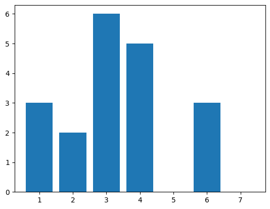

class Node():
def __init__(self, data):
self.data = data
self.next = None
class linked_list():
def __init__(self):
self.header = None
def append_node(self, data):
if self.header :
cur_node = self.header
while cur_node.next:
cur_node = cur_node.next
cur_node.next = Node(data)
else:
self.header = Node(data)
def print_list(self):
curr = self.header
print('start', end=" -> ")
while curr:
print(curr.data, end=" -> ")
curr = curr.next
print('end')
# затраты по памяти - константа O(1)
# оценка сложности - O(n)
def reverse_list(self):
prev = None
curr = self.header
while curr and curr.next:
next = curr.next
curr.next = prev
prev = curr
curr = next
self.header = curr
self.header.next = prev8 Алгоритмы и струкутры данных
Выполнение домашнего задания
8.1 Задача 1. Сделать реверс односвязного списка.
Пример:
Входные данные: 1, 2, 3, 4, 5.
Результат: 5, 4, 3, 2, 1
a = linked_list()
a.append_node(5)
a.append_node(55)
a.append_node(355)
a.print_list()
a.reverse_list()
a.print_list()start -> 5 -> 55 -> 355 -> end
start -> 355 -> 55 -> 5 -> end8.2 Задача 2. Сортировка документов.
Память - O(d × n) - хранение признаков всех документов
Первоначальная сортировка: O(d log d) Вычисление релевантностей: O(d × n)
Запрос типа 1 (получить топ-k): O(k) Запрос типа 2 (изменить признак): O(log d) - бинарный поиск, удаление из списка: O(d) - в худшем случае -> O(d) в худшем случае
def binary_search_left(arr, x):
"""
Бинарный поиск для нахождения позиции вставки
"""
left, right = 0, len(arr)
while left < right:
mid = (left + right) // 2
if arr[mid] < x:
left = mid + 1
else:
right = mid
return left
def solve_ranking_problem(input_data):
"""
Решает задачу ранжирования с входными данными в виде строки
"""
lines = input_data.strip().split('\n')
idx = 0
# Чтение количества параметров
n = int(lines[idx]); idx += 1
# Чтение параметров формулы
a = list(map(int, lines[idx].split())); idx += 1
# Чтение количества объектов
d = int(lines[idx]); idx += 1
# Структуры для хранения данных
docs = [] # список кортежей (-релевантность, id)
features = {}
relevances = {}
# Чтение объектов
for doc_id in range(1, d + 1):
doc_features = list(map(int, lines[idx].split()))
idx += 1
# Вычисление релевантности
relevance = sum(a[i] * doc_features[i] for i in range(n))
features[doc_id] = doc_features
relevances[doc_id] = relevance
docs.append((-relevance, doc_id))
# Сортируем документы по убыванию релевантности
docs.sort()
# Чтение количества запросов
q = int(lines[idx]); idx += 1
results = []
# Обработка запросов
for _ in range(q):
query_parts = lines[idx].split()
idx += 1
query_type = int(query_parts[0])
if query_type == 1:
# Запрос на получение k самых релевантных
k = int(query_parts[1])
top_k = [str(doc_id) for _, doc_id in docs[:k]]
results.append(" ".join(top_k))
else:
# Запрос на изменение признака: 2 doc_id feature_index new_value
doc_id = int(query_parts[1])
feature_idx = int(query_parts[2]) - 1 # переводим в 0-based индекс
new_value = int(query_parts[3])
# Удаляем старую версию документа из списка
old_relevance = relevances[doc_id]
target = (-old_relevance, doc_id)
# Ищем позицию для удаления
pos = binary_search_left(docs, target)
if pos < len(docs) and docs[pos] == target:
docs.pop(pos)
# Обновляем признак
old_feature_value = features[doc_id][feature_idx]
features[doc_id][feature_idx] = new_value
# Пересчитываем релевантность
delta = a[feature_idx] * (new_value - old_feature_value)
new_relevance = old_relevance + delta
relevances[doc_id] = new_relevance
# Вставляем обновленный документ на правильную позицию
new_entry = (-new_relevance, doc_id)
insert_pos = binary_search_left(docs, new_entry)
docs.insert(insert_pos, new_entry)
return results
# Пример использования с тестовыми данными
if __name__ == "__main__":
# Входные данные как строка
input_str = """2
1 100
10
1 2
2 1
3 1
4 1
5 1
6 1
7 1
8 1
9 1
10 1
4
1 2
1 10
2 4 1 1000
1 10"""
# Решаем задачу
output = solve_ranking_problem(input_str)
# Выводим результаты
for line in output:
print(line)1 10
1 10 9 8 7 6 5 4 3 2
4 1 10 9 8 7 6 5 3 28.3 Задача 3. Реализовать балансировку красно-черного дерева.
Бинарное дерево поиска является красно-черным деревом, если оно удовлетворяет следующим красно-черным свойствам. 1. Каждый узел является красным или черным. 2. Корень дерева является черным. 3. Каждый лист дерева (NIL) является черным. 4. Если узел - красный, то оба его дочерних узла - черные. 5. Для каждого узла все пути от него до листьев, являющихся потомками данного узла, содержат одно и то же количество черных узлов.
Разбор балансировки с habr


class Node():
def __init__(self, data):
self.data = data
self.right = None
self.left = None
self.parent = None
self.color = "RED"
class Tree():
def __init__(self):
self.root = None
def insert(self, data):
print(f"\nВставляем {data}")
new_node = Node(data)
if not self.root:
self.root = new_node
self.root.color = "BLACK"
print("После вставки:")
self.print()
return
current, parent = self.root, None
while current:
parent = current
if data < current.data:
current = current.left
else:
current = current.right
new_node.parent = parent
if data < parent.data:
parent.left = new_node
else:
parent.right = new_node
print("После вставки до балансировки:")
self.print()
self.balance_insert(new_node)
print("После балансировки:")
self.print()
def balance_insert(self, node):
while node != self.root and node.parent.color == "RED":
parent, grandparent = node.parent, node.parent.parent
if parent == grandparent.left:
uncle = grandparent.right
if uncle and uncle.color == "RED":
print("Case 1: дядя красный")
self.case_1(parent, uncle, grandparent)
node = grandparent
else:
if node == parent.right:
print("Case 2: узел справа")
node = parent
self.small_rotation(node, 0)
print("Case 3: большой поворот")
self.case_3(parent, grandparent)
break
else:
uncle = grandparent.left
if uncle and uncle.color == "RED":
print("Case 1: дядя красный")
self.case_1(parent, uncle, grandparent)
node = grandparent
else:
if node == parent.left:
print("Case 2: узел слева")
node = parent
self.small_rotation(node, 1)
print("Case 3: большой поворот")
self.case_3(parent, grandparent)
break
self.root.color = "BLACK"
def case_1(self, parent, uncle, grandparent):
parent.color = uncle.color = "BLACK"
if grandparent != self.root:
grandparent.color = "RED"
def case_3(self, parent, grandparent):
parent.color = "BLACK"
grandparent.color = "RED"
if parent == grandparent.left:
self.big_rotation(grandparent, 1)
else:
self.big_rotation(grandparent, 0)
def small_rotation(self, node, direction):
if direction == 1:
print(f"Малый правый поворот вокруг {node.data}")
new_root = node.left
node.left = new_root.right
if new_root.right:
new_root.right.parent = node
new_root.right = node
else:
print(f"Малый левый поворот вокруг {node.data}")
new_root = node.right
node.right = new_root.left
if new_root.left:
new_root.left.parent = node
new_root.left = node
new_root.parent = node.parent
node.parent = new_root
if not new_root.parent:
self.root = new_root
elif new_root.parent.left == node:
new_root.parent.left = new_root
else:
new_root.parent.right = new_root
return new_root
def big_rotation(self, node, direction):
if direction == 1:
print(f"Большой правый поворот вокруг {node.data}")
# Левый-правый: сначала левый поворот для левого ребенка, потом правый для узла
if node.left and node.left.right:
self.small_rotation(node.left, 0)
return self.small_rotation(node, 1)
else:
print(f"Большой левый поворот вокруг {node.data}")
# Правый-левый: сначала правый поворот для правого ребенка, потом левый для узла
if node.right and node.right.left:
self.small_rotation(node.right, 1)
return self.small_rotation(node, 0)
def print(self):
if not self.root:
print("Пусто")
return
self.print_(self.root)
print()
def print_(self, node):
if node:
color = "R" if node.color == "RED" else "B"
print(f"{node.data}({color})", end=" ")
if node.left:
self.print_(node.left)
if node.right:
self.print_(node.right)
# Тест
if __name__ == "__main__":
tree = Tree()
for val in [10, 20, 30, 5, 3, 7]:
tree.insert(val)
Вставляем 10
После вставки:
10(B)
Вставляем 20
После вставки до балансировки:
10(B) 20(R)
После балансировки:
10(B) 20(R)
Вставляем 30
После вставки до балансировки:
10(B) 20(R) 30(R)
Case 3: большой поворот
Большой левый поворот вокруг 10
Малый левый поворот вокруг 10
После балансировки:
20(B) 10(R) 30(R)
Вставляем 5
После вставки до балансировки:
20(B) 10(R) 5(R) 30(R)
Case 1: дядя красный
После балансировки:
20(B) 10(B) 5(R) 30(B)
Вставляем 3
После вставки до балансировки:
20(B) 10(B) 5(R) 3(R) 30(B)
Case 3: большой поворот
Большой правый поворот вокруг 10
Малый правый поворот вокруг 10
После балансировки:
20(B) 5(B) 3(R) 10(R) 30(B)
Вставляем 7
После вставки до балансировки:
20(B) 5(B) 3(R) 10(R) 7(R) 30(B)
Case 1: дядя красный
После балансировки:
20(B) 5(R) 3(B) 10(B) 7(R) 30(B) 8.4 Задача 4. Найти максимальную прибыль.
У вас есть данные о ценах акций за n дней в виде массива prices. Вы можете совершить не более k сделок (покупка + продажа = 1 сделка).
Найдите максимальную прибыль, которую можно получить, соблюдая правила: - Нельзя совершать несколько сделок одновременно (нельзя купить и продать в один и тот же день) - Нельзя покупать, если уже есть купленные акции - Можно совершать любое количество сделок, но не более k
Пример:
prices = [3, 2, 6, 5, 0, 3], k = 2
Максимальная прибыль: 7
Объяснение:
Покупка в день 2 (цена 2), продажа в день 3 (цена 6) → прибыль 4
Покупка в день 5 (цена 0), продажа в день 6 (цена 3) → прибыль 3
Итого: 4 + 3 = 7
prices, k = [3, 2, 6, 5, 0, 3], 2import matplotlib.pyplot as plt
plt.bar(range(1,len(prices)+1),prices)
def dynamic_max(prices, k):
n = len(prices)
df = [[0] * n for _ in range(k+1)]
for transaction in range(1, k + 1):
max_balance = -prices[0] #максимальный баланс после покупки акции
for day in range(1, n):
# продавать ли? берем максимум из прибыли вчера и цены сегодня+баланс после покупки
df[transaction][day] = max(df[transaction][day - 1], prices[day] + max_balance)
# покупать ли? берем текущегго максимума и прибыли от прошлых сделок - цена сегодня
max_balance = max(max_balance, df[transaction - 1][day] - prices[day])
for transaction in df:
print(transaction)
return df[k][n - 1]print(prices)
dynamic_max(prices,k)[3, 2, 6, 5, 0, 3, 0]
[0, 0, 0, 0, 0, 0, 0]
[0, 0, 4, 4, 4, 4, 4]
[0, 0, 4, 4, 4, 7, 7]78.5 Задача 5. В какой день было больше всего посетителей?
Дана информация о времени заезда и отъезда посетителей отеля. Необходимо определить, в какой день посетителей в отеле единомоментно находилось больше всего.
Пример входных данных (один элемент данного листа – кортеж, содержащий дату заезда и отъезда одного посетителя): [(“2024-09-15”, “2024-09-15”), (“2024-09-14”, “2024-09-21”)]
#память О(n), сложность O(nlog(n)) из-за сортировки
L = [("2024-09-15", "2024-09-15"), ("2024-09-14", "2024-09-21")]
def max_booking(L):
events = []
for (inn, out) in L:
events.append((inn, 1)) # прибытие
events.append((out, -1))
max_occupancy = 0
current_occupancy = 0
max_day = None
events = sorted(events, key=lambda x: x[0])
# Обрабатываем события в хронологическом порядке
for day, event_type in events:
current_occupancy += event_type
# Обновляем максимум если нашли новый
if current_occupancy > max_occupancy:
max_occupancy = current_occupancy
max_day = day
return max_day, max_occupancy
max_booking(L)('2024-09-15', 2)8.6 Задача 6. Реализовать алгоритм Беллмана-Форда для произвольного графа.
Алгоритм Беллмана-Форда (Bellman-Ford algorithm) позволяет решить зада- чу о кратчайшем пути из одной вершины в общем случае, когда вес каждого из ребер может быть отрицательным.
Без потери общности можно предположить, что если ведется поиск кратчайших путей, они не содержат циклов.
Для заданного взвешенного ориентированного графа G = (V,E) с истоком s и весовой функцией w : Е → R алгоритм Белл- мана-Форда возвращает логическое значение, указывающее на то, содержится ли в графе цикл с отрицательным весом, достижимый из истока . Если такой цикл существует, в алгоритме указывается, что решения не существует. Если же таких циклов нет, алгоритм выдает кратчайшие пути и их вес.
Поскольку в любой ациклический путь в графе G = (V, E) входит не более |V| различных вершин, в нем также содержится не более |V| - 1 ребер. Таким образом, можно ограничиться рассмотрением кратчайших путей, состоящих не более чем из |V| - 1 ребер.
Алгоритм Беллмана-Форда (Bellman-Ford algorithm) позволяет решить зада- чу о кратчайшем пути из одной вершины в общем случае, когда вес каждого из ребер может быть отрицательным.
Алгоритм Беллмана-Форда завершает свою работу в течение времени О (V E), поскольку инициализация в строке 1 занимает время O(V), на каждый из |V| - 1 проходов по ребрам требуется время О (Е), а на выполнение цикла for ниже - время О (Е).

import math
def Bellman_Ford(graph, edges, source):
distances = [math.inf] * len(graph)
distances[source] = 0
operations = 0
# Основной цикл релаксации
for _ in range(len(graph) - 1):
updated = False
for u, v, weight in edges:
operations += 1
if distances[u] != math.inf and distances[u] + weight < distances[v]:
distances[v] = distances[u] + weight
updated = True
if not updated:
break
# Проверка на отрицательные циклы
for u, v, weight in edges:
operations += 1
if distances[u] != math.inf and distances[u] + weight < distances[v]:
return None, operations
return distances, operationsimport random
# Граф
graph = [[0]*5 for _ in range(5)]
graph[0][1] = 6
graph[0][2] = 7
graph[1][2] = 8
graph[1][3] = 5
graph[1][4] = -4
graph[2][3] = -3
graph[2][4] = 9
graph[3][1] = -2
graph[4][0] = 2
graph[4][3] = 7
# Базовые ребра
base_edges = []
for i in range(len(graph)):
for j in range(len(graph[i])):
if graph[i][j] != 0:
base_edges.append((i, j, graph[i][j]))
for i in range(5):
if i == 0:
edges = base_edges.copy() # исходный порядок
name = "Исходный порядок"
else:
edges = base_edges.copy()
random.shuffle(edges) # случайный порядок
name = f"Случайный порядок {i}"
result, operations = Bellman_Ford(graph, edges, 0)
print(f"{name}: {operations} операций")
print(f"Результат: {result}\n")
Исходный порядок: 40 операций
Результат: [0, 2, 7, 4, -2]
Случайный порядок 1: 50 операций
Результат: [0, 2, 7, 4, -2]
Случайный порядок 2: 40 операций
Результат: [0, 2, 7, 4, -2]
Случайный порядок 3: 50 операций
Результат: [0, 2, 7, 4, -2]
Случайный порядок 4: 50 операций
Результат: [0, 2, 7, 4, -2]